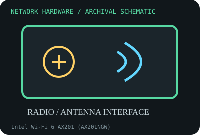

[ MODEL-SPECIFIC NETWORK HARDWARE RECORD ]
Intel Wi-Fi 6 AX201 (AX201NGW)
Wi-Fi 6 2x2 M.2 module built for Intel CNVio2 platforms, not a standard PCIe WLAN card. This record identifies the stated model/revision; visually similar products may use different silicon or firmware.

IDENTIFICATION: Verify the full label, board revision, vendor/device IDs and regulatory markings before selecting firmware or drivers. Nominal PHY/link rates below are not measured application throughput.
Specifications and compatibility
| Subcategory | Wireless adapters |
|---|---|
| Exact model | Intel Wi-Fi 6 AX201 (AX201NGW) |
| Interface and connector | M.2 2230 Key E form factor using Intel CNVio2 host integration; two antenna connectors. The host supplies integrated connectivity functions. |
| Controller / PHY / radio | Dual-band 2x2 Wi-Fi 6 (802.11ax) and Bluetooth 5.1 capability; feature set and radio certification depend on host/OEM implementation. |
| Nominal throughput (not a test) | Advertised peak link rate up to 2.4 Gb/s with 2x2, 160 MHz Wi-Fi 6 and compatible AP; not measured user throughput. |
| Measured throughput | No measured throughput is claimed. Actual WLAN tests depend on AP support, channel, signal, traffic mix, regulatory domain and host CNVio2 platform. |
| Driver / OS / firmware | Intel Windows 10/11 wireless and Bluetooth packages support listed platforms; Linux uses iwlwifi/firmware where platform integration is supported. OEM BIOS and chipset platform support remain prerequisites. |
| Compatibility | Requires a compatible Intel CNVio2 system; M.2 shape alone is insufficient. Not a conventional PCIe/USB AX200 substitute. Antennas and regulatory certification must match the host. |
| Variant warning | AX201NGW is CNVio2-only and is commonly confused with AX200NGW, which uses PCIe/USB. Verify full model string and platform generation; do not purchase by connector key alone. |
Variant and operating notes
AX201NGW is CNVio2-only and is commonly confused with AX200NGW, which uses PCIe/USB. Verify full model string and platform generation; do not purchase by connector key alone.
Intel Windows 10/11 wireless and Bluetooth packages support listed platforms; Linux uses iwlwifi/firmware where platform integration is supported. OEM BIOS and chipset platform support remain prerequisites.
Throughput policy: vendor/standard rates are labeled nominal. This archive includes no measured benchmark for this specimen; do not interpret a link rate or aggregate port capacity as sustained payload performance.
Archival, ESD and preservation notes
Record full module label, platform model, BIOS, antenna leads and driver package. Handle by edges with power removed, protect the CNVio contacts, and retain in ESD packaging.
Preserve the exact model/revision, serial/date code, firmware and driver versions, accessories, condition, source provenance, and source-document revision. Never retain access credentials or undocumented secrets in the public catalog.
Manufacturer and standards sources
- Intel Wi-Fi 6 AX201 product specificationsManufacturer or standards reference; match the complete model/revision before applying specifications.
- Intel AX201 support and downloadsManufacturer or standards reference; match the complete model/revision before applying specifications.
- IEEE 802.11 working group standardsManufacturer or standards reference; match the complete model/revision before applying specifications.
Source coverage can be family-level; manufacturer documentation for the exact part number and hardware revision takes precedence. Standards describe protocol behavior, not a promise of real-world performance.